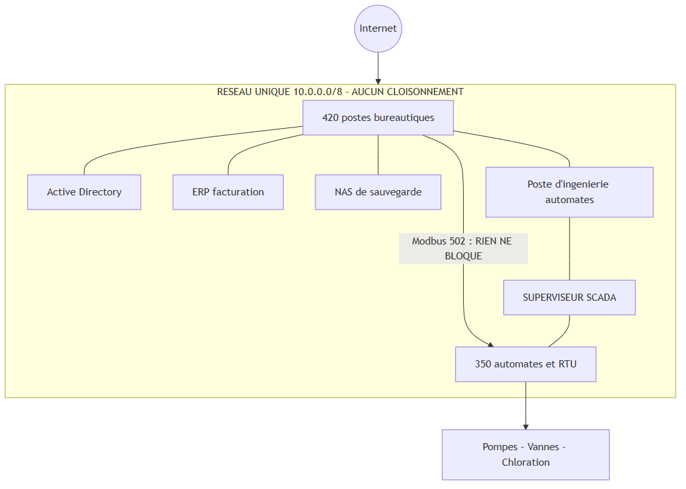
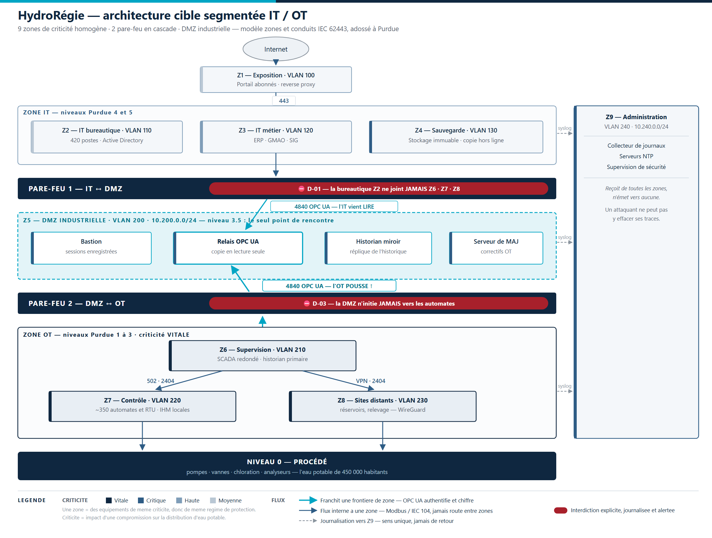

Une méthode réutilisable pour n'importe quelle organisation, pas seulement pour ce cas.
250 salariés ou plus
— ou —
CA > 50 M€ ET bilan > 43 M€
Le piège : l'effectif est un critère autonome. Mais en dessous de 250, il faut dépasser les deux critères financiers.
| Situation | Statut NIS2 | Fondement · conséquence |
|---|---|---|
| ▸ Annexe I + grande entreprise MON CAS | ENTITÉ ESSENTIELLE | art. 3(1)(a) — supervision ex ante |
| Annexe I + moyenne entreprise | Entité importante | art. 3(2) — supervision ex post |
| Annexe II + grande entreprise | Entité importante | art. 3(2) |
| Annexe II + moyenne entreprise | Entité importante | art. 3(2) |
| Petite ou micro entreprise | Hors champ | sauf art. 2(2) |
Trois voies indépendantes mènent à la même case
Eau potable (annexe I, pt 6) et 380 salariés ≥ 250.
L’effectif est un critère autonome : il suffit.
72 M€ de CA > 50 M€ et
95 M€ de bilan > 43 M€.
Même résultat sans regarder l’effectif.
Seul distributeur du territoire, enjeu de santé publique.
Art. 2(2)(e) et (g) — la taille devient indifférente.
Le statut se déduit du croisement secteur × taille. Rien d'autre n'entre en compte.
Eau potable = annexe I, point 6.
380 salariés ≥ 250 = grande entreprise.
Entité essentielle. Audits sans incident préalable, amende jusqu'à 10 M€ ou 2 % du CA, responsabilité personnelle des dirigeants.
| Obligation | Article | Échéance |
|---|---|---|
| Enregistrement auprès de l'autorité | 3(4) | Pré-enregistrement possible dès maintenant |
| Mise à jour des informations | 3(4) | Sous 2 semaines |
| Gouvernance : approbation et formation des dirigeants | 20 | Immédiat |
| Mesures couvrant les 10 domaines | 21(2) | Immédiat, avec plan |
| Prise en compte des fournisseurs directs | 21(3) | Immédiat |
| Correction sans délai des non-conformités | 21(4) | Permanent |
| Notification 24 h / 72 h / 1 mois | 23(4) | Procédure à écrire en priorité |
| Information des destinataires du service | 23(1) | Permanent |
| Supervision | Essentielle | Importante |
|---|---|---|
| ▸ Régime | Ex ante + ex post | Ex post |
| Audits sans incident | Oui | Non |
| Amende max. | 10 M€ / 2 % | 7 M€ / 1,4 % |
| Interdiction d'exercer | Possible | Non |
| Article | Famille de mesures | Écart | Actuel | Cible |
|---|---|---|---|---|
| 21(2)(a) | Analyse de risques et politique SSI | ABSENT | 0 | 3 |
| 21(2)(b) | Gestion des incidents | PARTIEL | 1 | 4 |
| 21(2)(c) | Continuité d'activité et gestion de crise | PARTIEL | 1 | 4 |
| 21(2)(d) | Sécurité de la chaîne d'approvisionnement | ABSENT | 0 | 3 |
| 21(2)(e) | Acquisition, développement, maintenance | PARTIEL | 1 | 3 |
| 21(2)(f) | Évaluation de l'efficacité des mesures | ABSENT | 0 | 3 |
| 21(2)(g) | Hygiène informatique et formation | PARTIEL | 1 | 3 |
| 21(2)(h) | Cryptographie et chiffrement | PARTIEL | 1 | 3 |
| 21(2)(i) | RH, contrôle d'accès, gestion des actifs | PARTIEL | 1 | 4 |
| 21(2)(j) | Authentification forte et communications | ABSENT | 0 | 4 |
| ▸ Moyenne | 4 absentes · 6 partielles · aucune conforme MON CAS | — | 0,6 | 3,3 |
L'article 21 impose les 10 familles. Chacune se cote de 0 à 4 et se qualifie absent, partiel ou conforme.
0,6 / 4 de moyenne. 18 écarts dont 6 critiques. Aucune famille n'atteint la conformité.
Tout ne peut pas être traité de front : il faut prioriser. Et l'art. 21(4) interdit de constater un écart sans agir — l'inaction est elle-même un manquement.
Quatre quadrants. L'ordre des travaux suit le risque évité par euro dépensé, pas l'ordre des articles.
Notification, MFA et gouvernance : impact élevé, effort faible. La segmentation : impact élevé, effort élevé.
De commencer par la phase 0 à 95 k€, pas par la segmentation à 485 k€. Le gros projet démarre en parallèle, mais il ne bloque rien.
Notification · MFA · sauvegardes hors ligne · bastion · gouvernance
Analyse de risques · PSSI · inventaire · matrice de flux
Le projet structurant : zones, pare-feu, DMZ, détection
Tests · exercices de crise · audits · indicateurs
| ID | Action | Responsable | Échéance |
|---|---|---|---|
| A-01 | Créer le comité de sécurité (COSSI) par délibération | Direction générale | 31/10/2026 |
| A-02 | Désigner le RSSI (lettre de mission signée) | Direction générale | 31/10/2026 |
| A-03 | Créer le compte MonEspaceNIS2, pré-enregistrer | DSI | 31/10/2026 |
| ▸ A-04 | Procédure de notification + 3 modèles + grille LE PLUS RENTABLE | RSSI | 30/11/2026 |
| A-05 | MFA sur l'administration et les accès distants | DSI | 30/11/2026 |
| ▸ A-06 | Sauvegarde hors ligne hebdomadaire A SAUVÉ LA CRISE | DSI | 15/12/2026 |
| A-07 | Versionner tous les programmes automates | Resp. exploitation | 15/12/2026 |
| A-08 | Supprimer TeamViewer → VPN + MFA + bastion | DSI | 31/12/2026 |
| A-09 | Annuaire de crise papier + messagerie hors domaine | RSSI | 31/12/2026 |
Chaque action porte un propriétaire nommé et une date. Sans les deux, ce n'est pas un plan.
9 actions en phase 0, dont 3 sous un mois. 39 au total sur les quatre phases.
Présenter à un contrôleur une trajectoire opposable : le COSSI suit l'écart à l'échéance, pas l'intention. C'est ce qu'exige l'art. 21(4).
Un plan sans indicateur n'est pas une trajectoire, c'est une intention. Art. 21(2)(f) impose d'évaluer l'efficacité des mesures.
| Instance | Fréquence | Rôle |
|---|---|---|
| COSSI DG, DSI, RSSI, exploitation, DPO | Trimestriel | Approuve, arbitre, suit les indicateurs — matérialise l'art. 20(1) |
| Comité de projet | Mensuel | Suit l'avancement des 39 actions |
| Point DSI / exploitation | Hebdomadaire | Pendant les phases 0 et 2 |
| Indicateur | Fin 2027 | Fin 2028 |
|---|---|---|
| Maturité moyenne art. 21 | 2,2 / 4 | 3,3 / 4 |
| Écarts critiques ouverts | 0 | 0 |
| Actions réalisées à l'échéance | > 80 % | > 90 % |
| Couverture MFA | 95 % | 100 % |
| Tests de restauration réussis | 4 / 4 | 4 / 4 |
| Flux IT → OT hors matrice | — | 0 |
| Dirigeants formés art. 20(2) | 100 % | 100 % |

| Zone | Nom | VLAN | Réseau | Criticité |
|---|---|---|---|---|
| Z1 | Exposition Internet | 100 | 10.100.0.0/24 | Moyenne |
| Z2 | IT bureautique | 110 | 10.110.0.0/22 | Moyenne |
| Z3 | IT métier | 120 | 10.120.0.0/24 | Haute |
| Z4 | Sauvegarde | 130 | 10.130.0.0/24 | Critique |
| ▸ Z5 | DMZ industrielle LA CHARNIÈRE | 200 | 10.200.0.0/24 | Critique |
| Z6 | Supervision OT | 210 | 10.210.0.0/24 | Vitale |
| Z7 | Contrôle OT | 220 | 10.220.0.0/22 | Vitale |
| Z8 | Sites distants | 230 | 10.230.0.0/22 | Vitale |
| Z9 | Administration | 240 | 10.240.0.0/24 | Critique |
Une zone regroupe des équipements de même criticité, donc de même régime de protection. Le VLAN reprend le 2e octet de l'adresse.
3 zones vitales (Z6, Z7, Z8) contre 2 seulement de criticité moyenne. La DMZ Z5 est la seule charnière.
Deux pare-feu en cascade, pas un seul. Je ne mets pas la même barrière devant la bureautique et devant les automates qui chlorent l'eau.

| Source | Destination | Port | Justification |
|---|---|---|---|
| Z6 SCADA | Z5 relais OPC UA | 4840 | ✔ L'OT pousse sa donnée, jamais l'inverse |
| Z3 GMAO | Z5 relais OPC UA | 4840 | ✔ Remontée des compteurs de pompes |
| Z6 SCADA | Z7 automates | 502 · 2404 | ✔ Pilotage — seul flux vers le procédé |
| Z9 bastion | Z5 · Z6 · Z7 | 22 · 3389 | ✔ Administration tracée, session enregistrée |
| Toutes zones | Z9 collecteur | 6514 | ✔ Journalisation centralisée |
| ▸ Z2 bureautique | Z5 · Z6 · Z7 · Z8 | tout | ✘ LA RÈGLE CENTRALE CELLE QU'ON TESTE |
| Z7 automates | Internet | tout | ✘ Un automate n'a rien à faire sur Internet |
| Z5 DMZ | Z7 automates | tout | ✘ La DMZ ne doit pas devenir un tremplin |
| any | any | tout | ✘ DENY ALL journalisé — dernière règle |
Tout ce qui n'est pas explicitement autorisé est interdit. Chaque ligne autorisée porte une justification métier et un validateur.
5 flux autorisés seulement. Le scénario d'attaque de la slide 2 traverse la ligne surlignée — elle le bloque.
Faire du test de cette règle l'indicateur n° 1 de la segmentation : flux IT → OT hors matrice = 0. C'est mesurable, donc opposable.
| Choix | Pourquoi | Ce qu'on écarte, et pourquoi |
|---|---|---|
| 2 pare-feu en cascade | Défense en profondeur, jeux de règles et administrateurs séparés | Un seul pare-feu : sa compromission ferait tomber toute la segmentation |
| VLAN + pare-feu | Le VLAN organise, le pare-feu protège | Le VLAN seul n'est pas une mesure de sécurité : les VLAN sont routés entre eux |
| OPC UA aux frontières | Seul protocole industriel authentifié et chiffré | Modbus reste cantonné à l'intérieur de l'OT, jamais routé entre zones |
| VPN WireGuard par site | Une clé par site, AllowedIPs en /32 — la maintenance distante passe par le bastion | L'APN privé seul ne chiffre pas et n'empêche pas l'usurpation entre sites |
| Sonde passive | Elle voit tout et ne peut rien casser | Un IPS en coupure : un faux positif arrêterait la distribution d'eau |
| Pas de diode en phase 1 | La DMZ bien configurée couvre le risque principal | 30 à 80 k€ pour un gain marginal — décision tracée art. 21(1) |
| Mode | Déclencheur | Ce qui fonctionne encore | Tenable |
|---|---|---|---|
| Nominal | — | Télégestion complète depuis le SCADA, optimisation énergétique | — |
| ▸ Dégradé | SCADA isolé volontairement LE 16 MARS | Les automates régulent seuls : niveau, pression, chloration asservie. IHM locales sur site | Plusieurs jours |
| Manuel | Automate hors service | Manœuvres humaines, dosage vérifié par prélèvements toutes les 4 h | Quelques jours |
Alarmes SCADA, postes inaccessibles. Main courante ouverte et horodatée — c'est elle qui fera foi.
Évaluation d'impact selon la grille. Confinement : coupure du lien IT ↔ OT en 33 minutes.
Cellule de crise réunie physiquement. Alerte précoce transmise à T0 + 10 h. Appui CERT-FR.
Images disque avant réinstallation. Éradication, restauration depuis la copie hors ligne.
Rapport final, cause profonde, plan d'amélioration. art. 21(2)(f)
| Heure | Acteur | Fait et décision |
|---|---|---|
| ▸ 04:12 | Astreinte exploitation | T0 — alarmes SCADA, postes inaccessibles L'HORLOGE ART. 23 DÉMARRE |
| 04:22 | Responsable DSI | Chiffrement confirmé sur le serveur de fichiers et l'ERP |
| ▸ 04:30 | RSSI | Décision de couper le lien IT ↔ OT LA DÉCISION CLÉ |
| 04:45 | DSI + exploitation | Lien coupé en 33 minutes — automates en autonomie, l'eau continue de couler |
| 05:00 | RSSI | Incident qualifié important art. 23(3) |
| 05:30 | Cellule de crise | Réunion physique, communication hors domaine |
| 06:15 | DSI | Sauvegarde hors ligne intacte → la rançon ne sera pas payée |
| 07:00 | DSI | Images disque réalisées avant toute réinstallation |
| 14:30 | Direction générale | Alerte précoce transmise — T0 + 10 h 18 |
| 15:00 | Communication | Information des usagers publiée art. 23(1) |
Tout part de T0 = 04 h 12 : c'est la prise de connaissance, donc le départ des délais de l'art. 23.
Chiffrement confirmé côté IT. L'OT n'est pas encore touché, mais rien ne l'en empêche : le réseau est plat.
De couper le lien IT ↔ OT. Je peux le faire parce que le mode dégradé du tableau précédent est testé : ça coûte 33 minutes, pas le service d'eau.
Dire qu'un incident existe — pas l'avoir compris. Soupçon d'acte illicite, effet transfrontière.
annexes/A-alerte-precoce-24h.md
✔ T0 + 10 h 18
Évaluation initiale, gravité, impact, indicateurs de compromission. Met à jour l'alerte.
annexes/B-notification-72h.md
✔ T0 + 60 h 48
Description détaillée, cause profonde, mesures appliquées, impact transfrontière éventuel.
annexes/C-rapport-final-1-mois.md
✔ J + 28
| Échéance | Délai | Article | Réalisé |
|---|---|---|---|
| Alerte précoce | 24 h après connaissance | 23(4)(a) | ✔ T0 + 10 h 18 — 13 h 42 de marge |
| Notification d'incident | 72 h après connaissance | 23(4)(b) | ✔ T0 + 60 h 48 — 11 h 12 de marge |
| ▸ Rapport final | 1 mois après la notification LE PIÈGE | 23(4)(d) | ✔ J + 28 — 5 jours de marge |
| Information des usagers | sans retard injustifié | 23(1) | ✔ J0 à 15 h 00 |
| Notification CNIL | 72 h — horloge distincte | art. 33 RGPD | ✔ J + 2 |
| Réponse de l'autorité | 24 h après l'alerte précoce | 23(5) | Reçue — orientations et appui |
Trois échéances NIS2, plus deux horloges parallèles : les usagers et la CNIL.
Le mois court depuis la notification des 72 h, pas depuis la découverte. Compter depuis T0 ferait perdre 3 jours.
Les trois délais sont tenus, avec marge. Et notifier tôt rapporte : l'art. 23(5) oblige l'autorité à répondre sous 24 h.
| Livrable | Conformité réglementaire | Clarté et structuration | Argumentation technique |
|---|---|---|---|
Note de qualificationjob-1-qualification.md |
Statut essentiel établi par 3 voies · obligations art. 20, 21, 23 · autorité ANSSI · enregistrement art. 3(4) | Raisonnement en 4 questions — slides 3 à 5 | Secteur annexe I pt 6 · calcul de taille détaillé, hypothèse de consolidation signalée |
Analyse d'écartjob-2-analyse-ecart.md |
10 familles de l'art. 21 cotées · 18 écarts qualifiés absent / partiel | Matrice impact/effort · 4 phases · 39 actions — slides 6 à 10 | Chaque écart relié à une action, un coût, une échéance et un propriétaire |
Schéma IT/OTschemas/architecture-cible.svg |
Segmentation réelle · 9 zones · DMZ industrielle | Légende et 4 niveaux de criticité — slides 11 à 16 | Pare-feu, VLAN, VPN justifiés, avec les options écartées |
Crise et notificationsjob-4-crise-notifications.md |
24 h / 72 h / 1 mois respectés · art. 23(1) et RGPD traités | Chronologie horodatée en 5 phases — slides 17 à 19 | Les 3 notifications rédigées, cohérentes avec la chronologie |